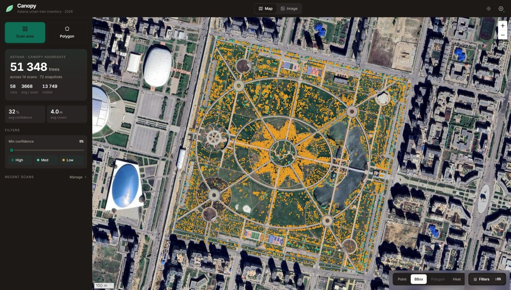
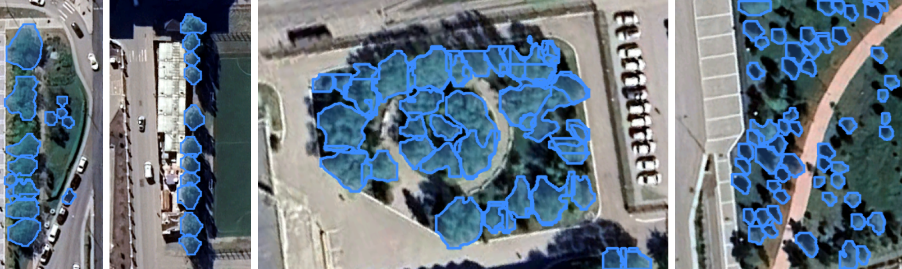
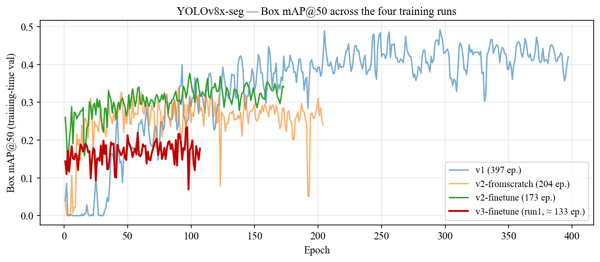
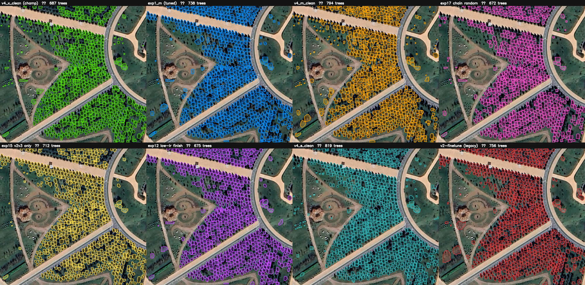
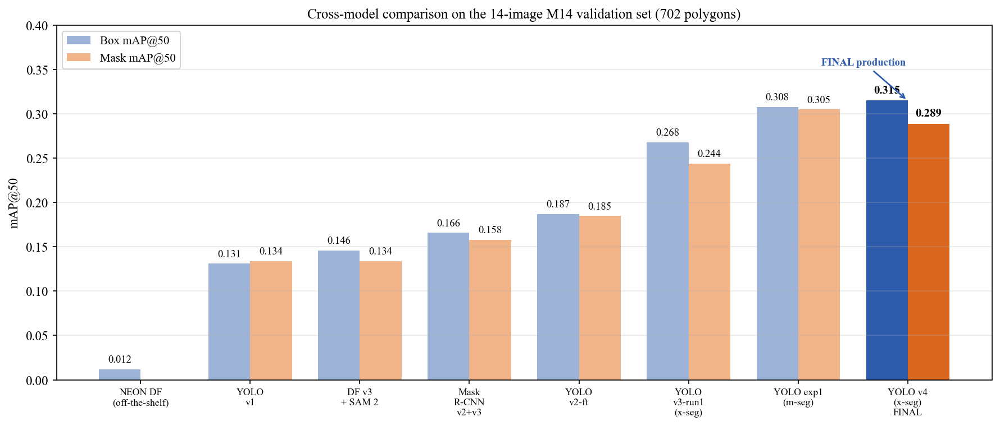
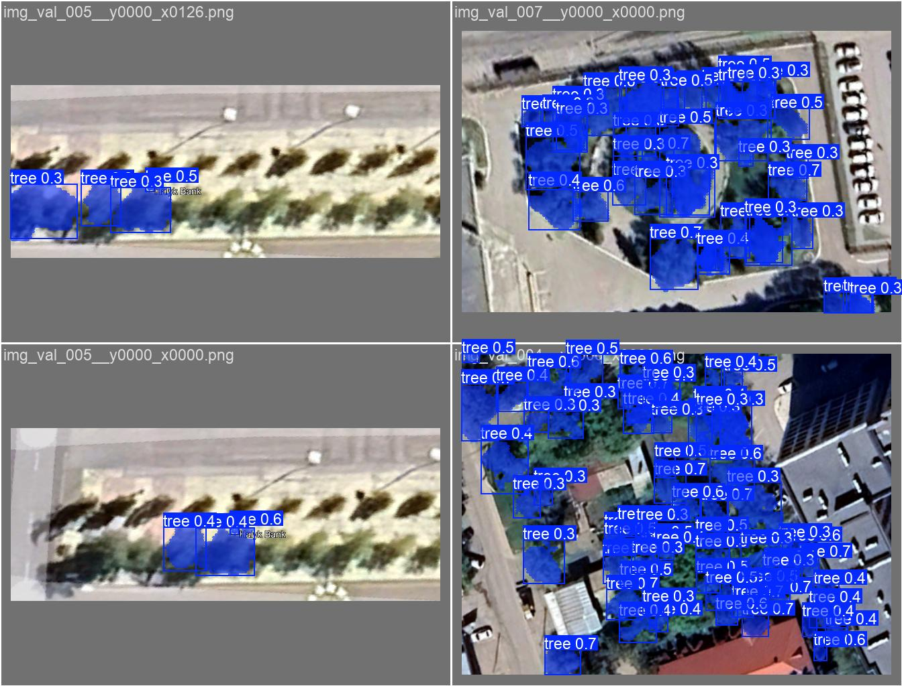
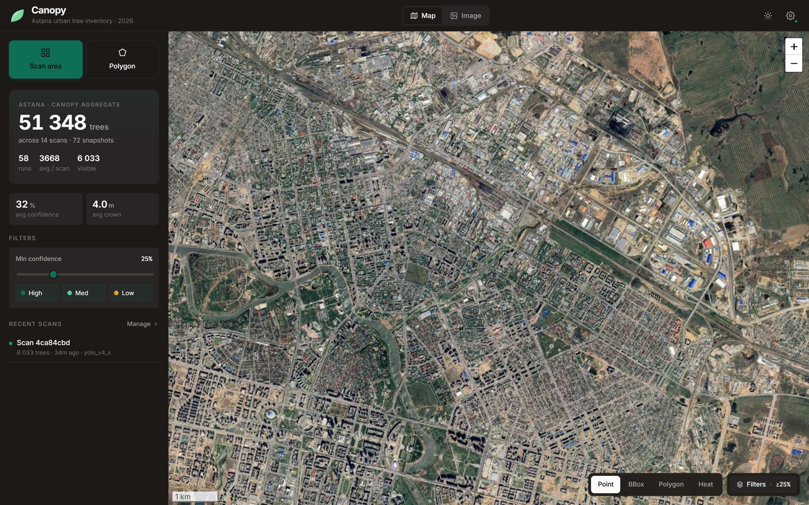
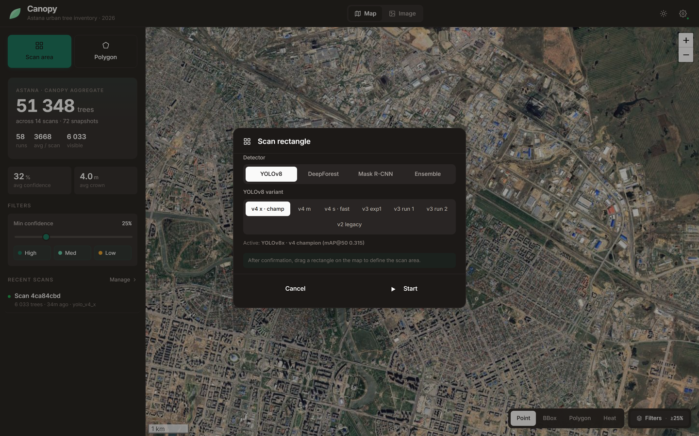

Astana is expanding fast. Urban green cover matters for heat mitigation, irrigation planning and green-space policy — but to know where the trees are, someone has to count them one by one off imagery. That doesn't scale to a whole city.
The real problem isn't "can we beat a benchmark" — it's that there is no automated process for this in Astana at all. Existing models are trained on North-American / European data, and we didn't even know if they work here.
So our goal was to automate the whole process end-to-end — and to be honest about how well it works.
Counting trees by eye, image by image. Slow, not repeatable, never finished for a growing city.
One repeatable pipeline: point at an area → it finds the trees and puts them on a map. No manual counting.
A popular ready-made detector (NEON DeepForest), run as-is on Astana — essentially blind. There was no off-the-shelf automation that worked here, so we had to build our own.
Build an automated end-to-end system that recognises trees and maps green space on Astana satellite imagery — and deliver it as a working tool, being honest that the accuracy is modest.
Supervised deep learning · transfer learning from pretrained weights · sliding-window tiling of large images · mAP@50 as the single comparison metric.
A satellite capture of an area of Astana at zoom 19 (≈ 0.3 m per pixel), cut into overlapping ~640 px RGB tiles by a sliding window.
Training input also carries human instance-polygon annotations — one outline per tree.
For every detected tree: a bounding box, an instance mask and a confidence score.
Tiles are stitched back, duplicates merged, and the result is shown on a city map with per-area counts and GeoJSON / CSV export.
| Method | Authors · year | Data | Best reported metric |
|---|---|---|---|
| Mask R-CNN (MCAN) | Lv et al. · 2023 | UAV RGB | Detection AP 92.4% |
| Faster R-CNN / RetinaNet | dos Santos et al. · 2019 | UAV RGB | AP 82–93% |
| YOLOv12m | Abbas & Damaševičius · 2025 | RGB satellite | mAP@50 90.8% |
| DeepLabV3+ / U-Net | Martins / Wang · 2021 | Aerial 10–32 cm | F1 91% · IoU 96% |
| DeepForest (off→fine) | Ventura et al. · 2024 | NAIP 60 cm (USA) | F 0.42 → 0.73 |
| SAM / SAM 2 | Kirillov / Ravi · 2023–24 | 1B+ masks | zero-shot segmentation |
| YOLOv8x-seg (ours) | This work · 2026 | Astana satellite · M14 | Box mAP@50 0.315 |
How much a predicted box overlaps the real one. 1.0 = perfect, 0 = miss. A tree counts as found when IoU ≥ 0.5.
Precision — of the trees we flagged, how many were real (few false alarms).
Recall — of all real trees, how many we found: ours ≈ 30% at the default setting.
Sweep the confidence threshold, track precision against recall, and take the area under that curve (at IoU ≥ 0.5). One honest number to compare every model the same way — it is the 0.315 on the results slide.
YOLOv8 — one pass: splits the image into a grid and predicts boxes + masks in a single look (fast).
Mask R-CNN — two passes: first proposes regions, then refines them (slower, careful).
Large captures are cut into ~640 px tiles with overlap (zoom 19, ≈0.3 m/px); detections are stitched back and de-duplicated.
The detection model is just one plug-in step — swap YOLO for Mask R-CNN, DeepForest or an ensemble without touching the rest of the pipeline. ~1 km² at zoom 19 in ≈18 s on a laptop GPU.
High-zoom Astana captures (~0.3 m/px). We hand-labelled ~5 500 tree crowns across ~100 images as instance polygons (≈8 700 training tiles after 640+128 tiling). A held-out common set of 14 images · 702 trees scores every model.
One-to-many, ON DELETE CASCADE.
8 GB VRAM ceiling → batch 2 + mixed precision. Deliberately modest, to prove reproducibility without a cluster.


Box mAP@50 across every experiment on the common set.
Box mAP@50 over my own first model (0.131 → 0.315).
Default augmentation beat hand-tuned (top-down trees are rotation-invariant); model size is U-shaped (m & x best, l worse); run-to-run noise ≈ ±0.03 — so small gaps aren't real.
A classic two-stage, region-based detector. Where YOLO looks once, Mask R-CNN looks twice — propose, then refine — which makes it slower but gives it naturally crisp instance masks. In our project it is one of the swappable engines behind the same automated pipeline.
A Region Proposal Network scans each tile and suggests candidate boxes → RoIAlign crops every region → three parallel heads output a box, a class and a per-pixel mask. Segmentation is built in, not bolted on, so outlines hug the crown.
Transfer-learned from a COCO-pretrained Mask R-CNN and fine-tuned on the same annotated Astana tiles (v2 + v3) for a single "tree" class — same train/val split as every other engine, so the comparison is fair. (Exact backbone/epochs to confirm with Berik.)
Box mAP@50 0.166, Mask 0.158. At confidence 0.5: precision 0.44 · recall 0.22 (157 of 702 trees). Strongest on medium, well-separated crowns; like the others, it loses the small and shaded ones.
Overall below YOLO on our data — but it recovers some larger trees the others miss, and its masks are the cleanest. That is exactly why the pipeline keeps it as a user-selectable engine rather than throwing it away.
A two-part engine: DeepForest (a tree-crown detector, RetinaNet-style) finds the trees, then SAM 2 (Segment Anything 2) turns each box into a high-quality mask. It is the engine that produced the 0.012 that started the whole project — and the clearest proof of why domain adaptation matters.
DeepForest outputs a box per crown; each box becomes a prompt for SAM 2, which segments the exact pixels. Two specialist models chained — a detector that knows "tree", and a segmenter that knows "object".
DeepForest is pretrained on North-American airborne forest imagery. Pointed at a dry steppe city it was nearly blind — 0.012. Not a bug, a mismatch: the trees, spacing and sensor all differ from what it had ever seen.
Fine-tuned DeepForest on the annotated Astana data and paired it with SAM 2 masks (confidence 0.3, 400 px patches). Result: 0.012 → 0.146 Box mAP@50 (Mask 0.134) — roughly a ×12 jump from re-teaching alone.
SAM 2 gives the best general-purpose masks of any engine, and the off-the-shelf→fine-tuned story is the project's core lesson. It still struggles with tiny, dense urban trees — so it's offered alongside the others, not instead of them.

The very same Botanical Garden, scanned by eight detection engines — each outlines a different set of trees and reports a different count (672–819). None is simply "right".
That's the whole design rationale: the pipeline lets the user switch engines and combine them — Weighted Box Fusion + a cross-YOLO 4-vote that drops single-model false positives (e.g. stadium roofs).
| Model | Box mAP@50 | Mask mAP@50 |
|---|---|---|
| YOLOv8x-seg v4 (ours) | 0.315 | 0.289 |
| YOLOv8x-seg v3 | 0.287 | 0.263 |
| Mask R-CNN | 0.166 | 0.158 |
| DeepForest + SAM 2 | 0.146 | 0.134 |
| YOLO v1 baseline | 0.131 | 0.134 |
| NEON DeepForest (off-the-shelf) | 0.012 | — |

We read this as "these engines are in the same ballpark on Astana," not "one clearly wins." What matters for the project: any of them can drive the automated pipeline.

Predictions line up with real tree crowns in many places. But honestly — it doesn't find every tree: at the app's default confidence it finds about 30% of labelled trees (more if looser, fewer if stricter), and per image it swings from almost none to nearly all.

Select an area of Astana → the app tiles it, runs the chosen model, and draws every detected tree on the map — with a confidence filter and Point / Box / Polygon / Heat layers.
YOLOv8 (7 sizes) · DeepForest ± SAM 2 · Mask R-CNN · Ensemble — because different models suit different images.
Counts shown in screenshots come from repeated demo scans — not a full city census.

Region scan over a rectangle or polygon, with live progress streaming. The user chooses the model and size before running — the multi-model idea, made concrete in the UI.
The v4 engine scanning the Botanical Garden end-to-end in Canopy: tile → detect → map, every tree drawn live.
A dense, well-defined planting — the clearest case. Honest reminder: on sparser scenes recall drops.
Plays here automatically (~1 min) — or open the full recording:
https://drive.google.com/file/d/1OceaLC4yMEgLtIThVR8t7_B4VRRPNaNf/view
None of this is hidden — it's the honest state of a student project, and each limit improves with more annotated data.
The headline isn't a score — it's that a manual task is now an automated process. Accuracy is modest (and honestly so: ready-made tools score ~0 here, ours do meaningfully better), but the process is the contribution.